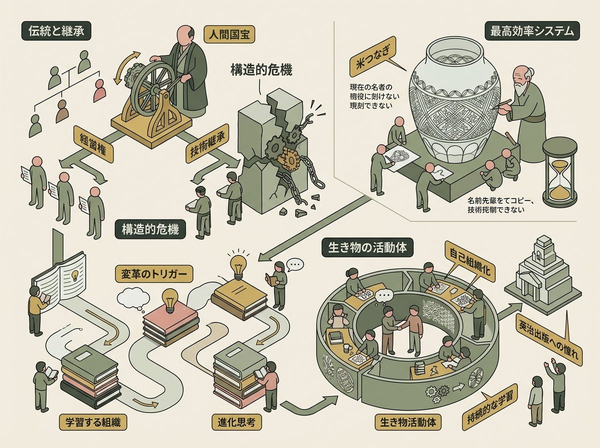
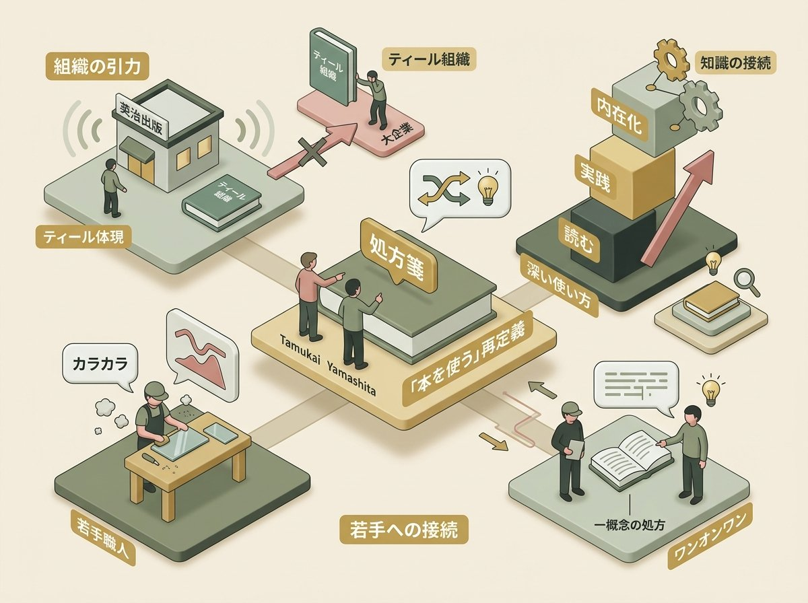
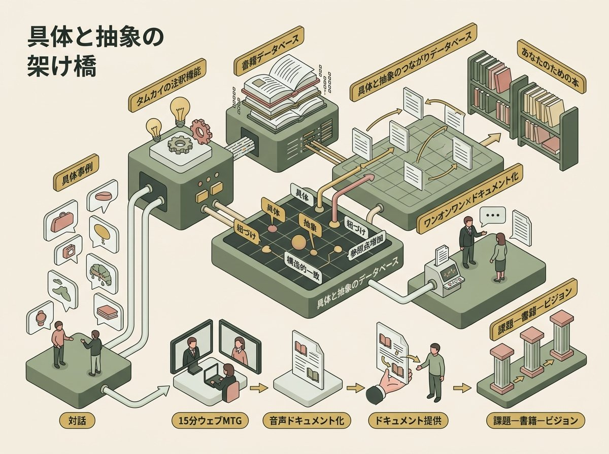
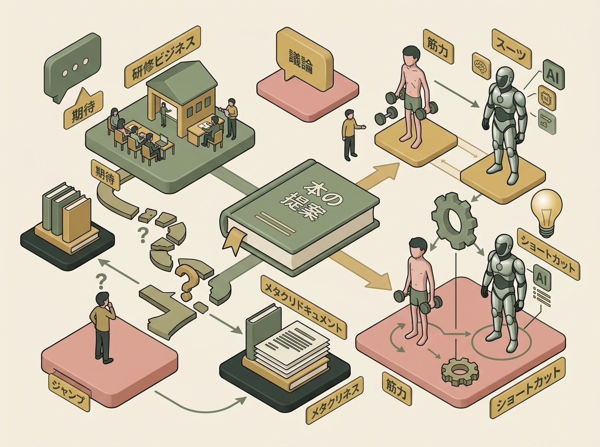
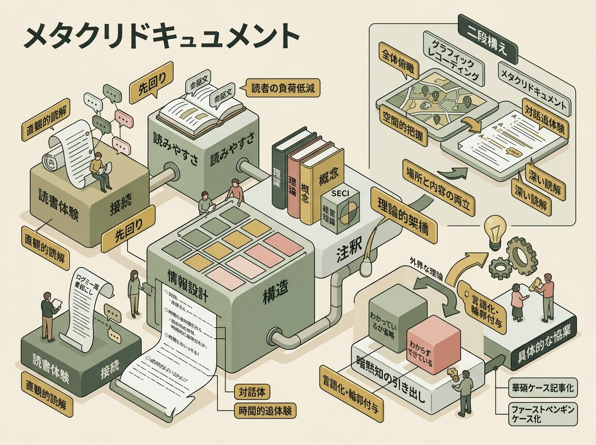

タムカイと山下（英治出版）の対話は、互いの近況報告から自然に始まった。タムカイは富士通の全社変革プロジェクトを経て、グラフィックレコーディングから組織変革へ、そしてメタクリドキュメントという新たな領域へと歩みを進めている。山下は出版社の枠を超え、書籍の知恵を企業の現場に届ける実践を重ねてきた。二人が共有するのは「対話の中に埋もれている知的資産をどう掘り起こすか」という問いである。山下が持ちかけたのは、江戸切子の老舗・華硝での協業事例と、書籍を経営の道具として使うという構想だった。タムカイが応じたのは、メタクリドキュメントの技術でその構想を形にできるのではないかという直感だった。出版と組織変革、伝統工芸と生成AI——遠く見える点と点をつなぐこの対話は、「本を使う」という行為の再定義を試みる往復書簡のようなものになった。

山下が最初に持ちかけたのは、日本橋にある江戸切子の工房・華硝の話だった。聞いたことのない固有名詞が次々と出てくる。当主は褒章を受けた人間国宝的な存在、その娘が経営を継いでいる。しかし話の核心は、華やかな肩書きの裏にある構造的な危機にあった。
山下
「今の当主はなんとか褒章みたいにもらってるなんかちょっと人間国宝的な人がいるんですけど、娘さんが会社を継いでるんです。娘さん女性なので、自分はグラス経営とかブランディングをやってるんですけど、なんかすごい英治出版の方が好きなんですよ」
華硝が直面していたのは、伝統工芸における継承の根本問題である。経営権は血縁で引き継ぐが、技術は血縁の外にいる職人たちに託さなければならない。山下はその構図を端的に語った。
山下
「要はなんかその、自分の職人としては継承しないわけですよ。会社がチャレンジしてるのは、経営権は血縁で引き継ぐんですが、技術はまあ繋がってない。今にいる職人さん。まあ、当主から引き継いでいくみたいなことをチャレンジされてっていうのは、結構それは伝統工芸の世界では珍しくて」
この「非血縁の継承」は単なる事業承継の話ではない。伝統工芸の世界では、技術と経営権と思想がひとつの血筋の中で一体として受け継がれてきた。華硝はそれを意図的に分離しようとしている。ニュースピックスのチェンジアワードを受賞するなど外部からの評価も得ているが、山下が語りたかったのは、その変革の裏側にあるメカニズムだった。
山下
「職人は今全員7人ぐらいいるんですけど、今までってその会長が作って他の人が作業者としてサポートするみたいなのが。まあ、システムとして確立されたんですよ。これって一人が創造して、その人たちが複製するっていうすごく機能としていいんですけど、それが正しすぎると、結局考えて作れる人が一人しかいないとすると属人化するんで」
「正しすぎると属人化する」——この一言に、華硝の問題の本質が凝縮されている。一人の名人が創造し、他の職人が複製するというシステムは、効率としては最適解である。しかし、そのシステムが完成しすぎたがゆえに、名人がいなくなった瞬間にすべてが崩壊する脆さを内包していた。
山下
「で、そのままだと、事業継承した時に、技術、まあ米つなぎっていうしかできない文様とかがあるんですけど、これは会長しかできないものってなっちゃって。で、そもそも継ぐ予定の人がいなくなってしまって、どうするんだっていう時に、まあちょっと英治出版とご一緒する機会があって」
「米つなぎ」という固有名詞が、危機の重みを具体的にする。会長しか刻めない文様があるということは、その文様の存続が一人の人間の寿命に依存しているということだ。そして継ぐ予定だった人がいなくなるという事態が、危機を決定的なものにした。
属人化（ぞくじんか）
特定の業務や技術が個人に依存し、その人がいなくなると組織が機能不全に陥る状態を指す。この対話の文脈では、華硝の「一人が創造し、他が複製する」というシステムそのものが、効率性と属人化のトレードオフの典型例として語られている。経営学ではこれを「コンピテンシー・トラップ」——現在の能力に過度に依存することで、新たな能力の獲得が阻害される状態——として議論することがある。華硝の事例が興味深いのは、属人化が「問題」としてではなく「正しすぎた結果」として認識されている点である。
山下が英治出版として華硝に提供したのは、コンサルティングではなく「学習する組織」のプログラムだった。技術を継承するためには、まず関係性そのものを問い直す必要があるという発想がそこにはあった。
山下
「そもそも上と下とか、作業者と作業者みたいな関係性を問い直す、見つめ直すみたいなことが、重要なんじゃないかっていうのを。まあ学習する組織のプログラム、若手の職人に参加してもらって。これからの工房におけるより良い関係性とは何かみたいなことを、機械的なシステムじゃなくて、循環していくもので、生き物の活動体のシステムを作りたいみたいなことをまず体感してもらって」
「機械的なシステムではなく、循環していく生き物の活動体のシステム」という言葉が、山下の目指す変革の方向性を明確に示している。華硝の従来のモデルは機械的に最適化されたものだった。それを、生命体のように自己組織化するシステムへと転換しようとしている。
山下
「で、少しずつ工房の中で実践していって、まあ会長さんとの関係性が変わっていったみたいなことが、まあ学習する組織ベースに。語りたいなと思って、その話を形にしていく。技術継承とか、上下関係の問い直しみたいなものを、まあ、いわゆるなんかこう、コンサルティングサービス入れて変わってったっていうよりかは、ここに書かれているものを生かしながら、そういう人に書いてることを読んで、しながら、じわじわと変わっていくみたいな」
山下が強調するのは「じわじわと変わっていく」という時間感覚である。コンサルティングが外部から処方するのに対し、書籍を媒介とした変革は、組織の内部から滲み出るようにして起きる。タムカイはこの話の前提を確かめにかかった。
タムカイ
「今回の、まあその華硝さんの場合だと、この学習する組織をもともと知っていて。というか、華硝さんがすでに出会っていて、本と出会って、英治出版の人に連絡を取ってきてっていう流れになるんですかね」
山下の答えは、もう少し複雑な経緯を含んでいた。最初のきっかけは「学習する組織」ではなく、別の書籍だった。
山下
「もっと言うと、別の文脈でやって、ハート・オブ・ビジネスで、今なんかこう、変わりたい時期なんですって言ってて、ちょっと話しましょうって言って行ったら、結構その、それこそ、そもそも継ぐ予定だった人がいなくなっちゃったりとか、ごたごたしてたんですよ」
「変わりたい時期」という華硝側の内発的な動機と、英治出版との出会いが偶然に重なった。山下はさらに、チームビルディングに「進化思考」という別の書籍を用い、最終的に華硝が英治出版という組織そのものに憧れを抱いたことを明かした。
山下
「端的に英治出版みたいな組織になれたらいいなって思ってくれる。で、じゃあ英治出版の支援をお願いすると、まあ規模感とかも近いので、変わるチャンスになるんじゃないかっていうふうに思ってくれる」
ここに華硝の事例の独自性がある。華硝は「本の内容」だけでなく、「本を出している組織の在り方」そのものに変革の手がかりを見出した。書籍が知識の媒体としてだけでなく、その背後にある組織文化への入口として機能したのだ。
学習する組織（Learning Organization）
ピーター・センゲが提唱した、自己変革し続ける組織の概念。システム思考、自己マスタリー、メンタルモデル、共有ビジョン、チーム学習の五つのディシプリンから成る。この対話の文脈では、華硝の「一人が創造し他が複製する」という機械的システムから、「循環していく生き物の活動体」への転換を支える思想的基盤として位置づけられている。興味深いのは、華硝の三代目・熊倉千砂都が学習する組織の概念自体は以前から知っていたにもかかわらず、「プログラムに参加する」という行動には至っていなかったという点である。知識として知っていることと、それを実践に移す契機を得ることの間には、しばしば大きな溝がある。
非血縁の技術継承
伝統工芸における継承は、一般に血縁関係を前提としてきた。技術・経営権・思想の三位一体を一つの家系の中で維持するこのモデルは、品質の一貫性と文化的アイデンティティの保全に寄与してきた。この対話の文脈では、華硝がこの前提を意図的に解体し、「経営権は血縁で、技術は非血縁で」という分離を試みていることが語られている。これは組織論における「知識の脱埋め込み（disembedding）」——特定の個人や文脈に埋め込まれた知識を、より広い範囲で共有可能な形に転換するプロセス——の実践例として読むことができる。
米つなぎ
江戸切子の伝統的な文様の一つで、米粒が連なる様子を精緻なカットで表現したもの。この対話の文脈では、「会長しかできない」技術の象徴として言及されている。一つの文様が一人の職人にしか刻めないという事実は、伝統工芸における暗黙知の極端な属人化を物語る。米つなぎの継承問題は、単に技術移転の話ではなく、「名人芸をシステムとして再現可能にする」という、あらゆる組織が直面する知識マネジメントの根源的課題の縮図でもある。

華硝の事例を聞いたタムカイが最初に口にしたのは、具体的な施策への質問ではなく、言葉の定義についてだった。
タムカイ
「まずこう言葉で気になったのが、本を使うっていうのが。どういうことって定義されてると面白いのかなというのを思ったんですね」
この問いかけは、この対話全体の伏線になった。「本を使う」とはどういうことか。読むこと、実践すること、組織に浸透させること——それぞれの段階で「使う」の意味は異なる。タムカイは華硝の事例を通じてその定義を探ろうとした。
タムカイがまず指摘したのは、英治出版という組織そのものが持つ引力だった。
タムカイ
「まずはその英治出版という組織の魅力というか。まあ、おそらくこう、いろんな形が今。ね、まあ、昔であればもうトップがいて、さあ、イエスサーっていうのが、まあ一番強かったのが、だんだんこう緩まっていく時代に、まあ最もこう、次に近いようなところを一つ持っているっていうのがあるだろうし」
英治出版がティール組織の出版社であると同時に、自らがティール的な組織を体現しているという二重性。タムカイはその構造を見抜いた上で、大企業がティール組織に飛びつく風潮に対してやんわりと釘を刺した。
タムカイ
「なんか、ティール組織とかって、なんかよくわかんないけど、大企業の人たちがみんな飛びついてるイメージがあるんですよね。みんな限界だっつって、あそこ行って、まあそれもそれで限界だと思うけどねみたいなのは、急には変わらんよ、絶対にって」
この観察は皮肉のようでいて、華硝の事例がなぜ成功したかを逆説的に照らしている。大企業が「ティール組織」を概念として導入しようとして失敗するのに対し、華硝は英治出版という「ティール的な組織」の実体に触れ、「こうなりたい」と直感したのだ。理論ではなく、存在そのものが説得力を持つという事例である。
そしてタムカイは、この対話の中核となる比喩を提示した。
タムカイ
「もう一個はなんかその本、最近僕が出会った人もそうなんですけれど、なんかその本が血肉になってる人っていうのが多分いる気がするんですよね。で、その人ってこう話をしてる時に、あ、あなたにはもう本当になんでしょう。処方箋のように本を出せる人っているじゃないですか。あ、今だったらこれですねみたいな」
「処方箋のように本を出せる人」——この表現が、この対話における「本を使う」の最初の再定義である。本を読むのではない。本を処方するのだ。タムカイはさらにこの直感を掘り下げた。
タムカイ
「本を使うっていうこと自体がなんかなんだろうな。一般の人はなんか、うん、それっぽい本を読んで書いてあるものをやるとかだと思うんですけれど。うん、なんかもう一段階すごい深いところで、やっぱり英治出版の人は英治出版の本を使えるんだなっていうのを思ったんですよね。うんうんうん、今ここにはこれですねみたいな」
「一般の人」の本の使い方と、英治出版の人の使い方の差を、タムカイは「もう一段階深いところ」と表現した。それは単なる熟読の問題ではなく、本の内容を抽象的な知識として内在化し、目の前の具体的な状況と即座に接続できる能力のことを指している。
処方箋としての本
医師が患者の症状に応じて適切な薬を選ぶように、相手の課題に応じて適切な書籍を提案する行為を指すタムカイの比喩。この対話の文脈では、英治出版の実践者が持つ「本の内容を抽象的な知識として血肉化し、他者の具体的な文脈に即座にマッピングできる能力」を表現している。これは情報科学における「推薦システム」とは本質的に異なる。アルゴリズムがキーワードの類似性で推薦するのに対し、「処方箋」は相手の語られていない文脈——組織の空気、経営者の迷いの質、変化への準備度——を読み取った上での判断を含む。
山下がこの「処方箋」の具体例として語ったのが、若手職人へのワンオンワンのエピソードだった。
山下
「いや、なんか今、その若手な職人さんにワンオンワン入ってるんですけど、そのこうカラカラしてるだけの日々を過ごしてると、なんか問題がおきたっていう時、きたっていう説明する時に全然ロジカルじゃないですよ。なんていうのかな。そもそもオンラインでもやってるし。ずっと飲食で友達してる人たちとのコミュニティが一番あるみたいな世界なんですよね」
「カラカラしてるだけの日々」という表現が、職人の日常を鮮烈に描写する。ガラスを削り続ける日々の中で、言葉で問題を構造化する訓練はなされてこなかった。そこに山下は一冊の本の一つの概念を差し込んだ。
山下
「なんで伝わらないのかなっていうことを何度も話をしたんですけど、これ英治出版の本に書いてある縦の論理を横の論理にしたい話をしてあげたんです。そしたらすごい腹落ちをしてくれたんで」
タムカイ
「ロジカルプレゼンテーションのその縦の論理と横の論理っていうところまでひも付きできれば、あの本を一冊全部読みなさいって言われると、みんなうん……ってなるけど、この章のここのところだけでも読んでみてって言うと、その人、多分ちょっと左右を読んだり、目次を読んだりする」
ここに「本を使う」の二つ目の再定義がある。本を丸ごと渡すのではなく、一つの概念を抜き出し、相手の実感と接続した上で、その概念が書かれている箇所だけを示す。すると読者は自発的にその周辺を読み始める。本が「読むべきもの」から「読みたくなるもの」に変わる瞬間である。
タムカイはここからさらに一般化を試みた。実務と本の関係性を作れる人の希少性について。
タムカイ
「超絶読書家の人のなんか二つあるなと思ってて。なんかめっちゃ読んでますっていう人もいれば、なんか抽象化された知識として本の知識を持ってて、あ、今のそれって抽象化するとこういうことだから、この本のこれと一緒だよっていうのを橋渡ししてくれる人がいるんですけれど」
読書量の多さと、本の知識を他者の実務に橋渡しできることは、まったく別の能力である。タムカイはこの区別を「司書」との対比でさらに鮮明にした。
タムカイ
「っていうのは正直そんな多くないだろうなと思うんですよね。司書さんとかになってくる。でも、司書さんも多分ちょっと違うかもしれない。その本と本の関係性というよりは、実務と本の関係性を作れるっていうことだと思いますし」
司書は本と本の関係性のプロフェッショナルである。しかし山下がやっていたのは「実務と本の関係性」を作ることだった。本と本をつなぐ水平的な知識ではなく、現場の具体と書籍の抽象を垂直につなぐ能力。タムカイはこれを華硝の成功要因の核心として位置づけた。
タムカイ
「今回のその華硝さんでうまくいったのは、そこをなんか無意識のうちにうまくやったからなんじゃないかなって気がしたんですよね」
「無意識のうちに」という言葉が重要である。山下自身はおそらく、自分がやっていることを「処方箋のように本を出す」とは認識していなかった。タムカイの言語化によって、暗黙知が形式知に転換された瞬間でもある。
縦の論理と横の論理
高田貴久『ロジカル・プレゼンテーション』（英治出版）に登場する概念。縦の論理（なぜそう言えるのか）と横の論理（他にないのか、漏れはないか）の二軸で思考を整理するフレームワーク。この対話の文脈では、職人が「問題がおきた」と説明する際の非構造的な語りに対し、山下がこの概念を一つだけ差し込むことで「腹落ち」が起きたという実例として語られている。注目すべきは、職人にロジカルシンキングの研修を施したのではなく、日常のワンオンワンの中で、具体的な困りごとに紐づけて一つの概念を手渡したという手法である。これは教育学でいう「足場かけ（scaffolding）」——学習者の現在地から一段だけ高い足場を提供する支援——の典型例と言える。
山下がこの本の使い方を自覚的に営業プロセスに組み込んでいたことは、別の事例からも明らかになった。葉山町の不動産会社との仕事で、話好きの経営者に対して山下がとった行動は象徴的だった。
山下
「2回目ぐらいでちょっとこれやってられないなと思って、次はなんか対面にしましょうって言って。で。もう案の定、また話し始めて15分ぐらいで、今日は結論出なかったら一旦解散しましょうっていう風に言って。で、現時点で御社を持ってる可能性ってこうですっていうのを、たまたまその時出したソース原理入門って本になぞらえて、この本こうしませんかっていう話がすごいトントン拍子でつながって」
タムカイはこのエピソードから、書籍が持つ「結晶化」の力を言語化した。
タムカイ
「凝縮してエッセンスになって、エビデンスとともに世の中にこう出されている。まあそれは論文とかとも同じように、まあ論文の方が査読とかめんどくせえって話を聞いたことはありますが、まあ一つの形としてちゃんと結晶化されてるので、そう、多分話してる方もいろんなことがあって、こんなこともあって、こんなこともあってって言ったのがキュってまとまってるってなると納得がいく」
経営者の語りは拡散する。あれもあった、これもあった、と経験が次々と吐き出される。そこに書籍という「結晶化された知識」が差し込まれると、散らばっていた経験が一つの構造の中に収まる。書籍は情報源としてではなく、経験を整理するフレームとして機能するのだ。
そしてタムカイは、この「経営に本を使う」の再定義に向けて、一つの構造を提案した。
タムカイ
「本って悩んでますだけで終わる本はないわけじゃないですか。本は本の中でストーリーがあって、ある。まあ、ネガティブな状態であったりとか、最初の初期状態から。まあ、最初にゴールを見せちゃって、途中に何があったかにしても、2つの状態があって、その真ん中をつないでるのが本の内容っていうのがほとんどだとすると」
本には起点と終点がある。課題と、その先にあるビジョン。経営者もまた、課題とビジョンを持っている。この二つを重ね合わせることが、「本を使う」の最も深い定義なのではないか。タムカイのこの仮説に、山下は強く反応した。
山下
「相談で課題とビジョンを必ず聞いてるなと思って。うん、聞いてると、行き先ってまだないルートがあるから、だいたい当てに行った時にすごいずれることあるんですけど、課題とビジョンっていう最初と最後、橋を最後受けると、そこの間の本を探せばいいんですよね」
「課題とビジョンの間の本を探す」——この一文が、この章で試みられた「経営に本を使う」の再定義の到達点である。本は課題を解決するための教科書ではない。経営者の現在地と目的地を結ぶ橋の、建材なのだ。
実務と本の関係性を作る能力
タムカイが「司書とも違う」と表現した、書籍の抽象的知識と他者の具体的実務を接続する能力。この対話の文脈では、山下が華硝の職人に「縦の論理と横の論理」を差し込んだ実例、葉山の経営者に「ソース原理入門」をなぞらえた実例として具体化されている。ナレッジマネジメントの領域では、こうした能力を持つ人を「知識ブローカー（knowledge broker）」と呼ぶことがある。知識ブローカーは異なる実践コミュニティの間に立ち、一方の文脈で生まれた知識を他方の文脈に翻訳する役割を果たす。山下の場合、「書籍」という実践コミュニティと「経営の現場」という実践コミュニティの間に立つ知識ブローカーとして機能していると言える。
知識の結晶化
タムカイが書籍の性質を「凝縮してエッセンスになって、エビデンスとともに世の中に出されている」「結晶化されている」と表現した概念。この対話の文脈では、経営者の散漫な語りに対して書籍が「整理のフレーム」として機能するメカニズムを説明するために用いられている。野中郁次郎のSECIモデルにおける「結合化（Combination）」——形式知と形式知を組み合わせて新たな形式知を生み出すプロセス——とも接続する概念だが、この対話が示唆しているのはむしろ、結晶化された知識（書籍）が他者の暗黙知を表出化させる触媒として機能するという、SECIモデルの螺旋的な運動そのものである。
課題—書籍—ビジョンの三点構造
この対話の文脈では、書籍の選定が「課題（As-Is）」と「ビジョン（To-Be）」の二点によって決まるという構造が提示されている。同じ「組織のコミュニケーションがうまくいかない」という課題であっても、目指す姿が「循環する関係性」なのか「統制のとれた指揮系統」なのかによって、推薦される書籍は変わる。これはコンサルティングにおけるギャップ分析（gap analysis）と同型だが、ギャップを埋める手段として「研修」や「制度設計」ではなく「一冊の本の特定の章」が置かれる点に独自性がある。書籍が持つナラティブの力——理論だけでなく、ある初期状態からある到達状態への変容の物語を内包していること——が、この三点構造を成立させている。

山下が「英治出版の本を全部読んでいるAIがいたら」と口にした瞬間、対話の温度が変わった。それまで華硝の事例という具体的な地面を歩いていた二人の足が、ふっと浮く。タムカイの注釈機能——対話の中の発言に理論的・概念的な補助線を引くあの仕掛け——が、書籍データベースと接続されたらどうなるか。その問いが、この章の起点になる。
山下
「それこそタムカイさんがあのメタクリの中に出典、注釈機能あったじゃないですか。その英治出版の本を全部読んでもらってるAIがいて。で、課題とかケースを入力してもらって。で、適切な該当書籍を出すみたいなこと。技術的には機械ができることであります」
タムカイ
「これね、できますね。っていうか、実はあの、これからちゃんと特許を取りに本当に取りに行くかって言ってる内容が前に言った。その人間は割と具体的な話をしている。で、AIは理論的な話を抽象的に持っている。で、それこそなんか職人同士の会話がなかなかつながらないんですよねっていう話と、まあ途中にその山下さんのなんかコメントとかがあって、こっち側に縦の論理と横の論理の話があるとなると、これとこれは1対1になっている。で、別のところでなんか具体的なものと、縦の論理と横の論理が一緒になっているみたいなのになると、ここが似てるよねみたいなのが探せるっていう風なデータの持ち方を今ど取ろうとしてて」
タムカイが構想しているのは、単なるレコメンドエンジンではない。対話の中で語られる「具体」と、書籍に蓄積された「抽象」を、1対1の紐づけとして蓄積していく——いわば「具体と抽象のつながりデータベース」である。職人同士の会話がつながらないという現場の発話と、ロジカルプレゼンテーションにおける「縦の論理と横の論理」という概念が、構造的に同じ課題を指していると判定できる。そのつながりが増えるほど、次の対話で引き出せる参照点も増えていく。
タムカイ
「普段ではなかなかない具体と、抽象のつながりのデータベースを作ろうとしてるんですよ。今の時点でも多分どんな本で、どんな論旨で、どんなことが書いてあるっていうのは登録もできるし、世の中にある情報から持ってこれるので。英治出版の本、まあそれ以外も含めて、こんな本があって、こういうことが書いてあって、みたいなのを貯めておいて、それこそワンオンワンの記録をこの間みたいにドキュメントにすると、多分AI側で探せるものは引っ張り上がってくるし」
具体と抽象のつながりデータベース
一般的な推薦システムは、ユーザーの嗜好や行動履歴から類似アイテムを提案する。この対話の文脈では、タムカイが構想するデータベースはそれとは異質である。ある対話で語られた具体的な困りごとと、ある書籍に記述された抽象的な理論を、意味のレイヤーで1対1に結びつけて蓄積する。認知科学における「構造的アナロジー（structural analogy）」——表面的な類似ではなく、関係構造の一致によって二つの領域を結ぶ思考——に近い。データが増えるほど、まだ誰も気づいていない「似ている構造」が浮かび上がる可能性がある点で、既存のナレッジグラフとも射程が異なる。
ここから対話は、このデータベースを実際の組織支援にどう組み込むかという具体論に降りていく。タムカイが持ち出したのは「ワンオンワン × ドキュメント化」という接続法だった。
タムカイ
「経営者の方とワンオンワンをして、前に言ってた自分のが一番刺さるの話とかだとすると、こうやって話して、その中でまあ問題と思ってることはとか、普通のワンオンワンをこうしてあの形式にする。で、その形式にする時の裏に、英治出版の本をデータベースとして持ってる状態作っておいてあげると。そこから引っ張り上げて、この本のこことつながりますよねみたいなのが出てくるかもしれない」
タムカイ
「で、自分が話したことを客観的にその経営者が読んで、ああそうか、なんか何気なく言ってたこともこうつながってんだってなると、本との距離も近づくのがあると思いますし。で、つながった本の内容にはだいたいこう実践とかが書いてあるはずなので、じゃあこの本のこのワークやってみようってなると、まず納得感も多くなるかもしれない」
対話し、ドキュメント化し、本と紐づける。この三段階を経営者一人ひとりに対して行うことで、「あなたのための本」が生まれる。タムカイはさらに、この個別化を組織全体に展開する構想へと踏み込んだ。
タムカイ
「ああで、例えばですけど、それこそ20人ぐらいだったら全部力技でワンオンワンさせてもらって、全員のドキュメント作って、多分全員の話の中に英治出版の本がちょっとずつ入ってきたりすると。この本のここだけでもちょっと読んでみませんってやると、多分、普段本を持ってない人が本を持つ瞬間が作れると思いますし。で、全員がちょっとずつ、ABDみたいに一冊の本をみんなで読むっていうよりも、全員がバラバラの本の一部分だけ読んで話すとか。でも、なんかちょっと面白そうだなとか思う」
山下はこの提案に即座に反応した。なぜ面白いのか、その理由を自ら言語化している。
山下
「いや、そう、面白い。なんで面白いかっていうと、そのまず自分と関連付けられてる本じゃないですか。だから読みたいです。読んで、そもそも自分と関連付けられてるポイントがわかるそうなんですよね。そのなんだろう、自然に働くっていうか、なんか舞台用意してもらって読んだ上で読んでる感じがしますよね」
ABD（アクティブ・ブック・ダイアローグ）との構造的差異
ABDは一冊の本を参加者が分担して読み、要約を共有し合うことで集合知を生む手法である。この対話の文脈では、タムカイはABDとは逆の構造を提案している。全員が同じ本を読むのではなく、全員がバラバラの本の一部分だけを、自分の発言と紐づけられた形で読む。出発点が「本」ではなく「自分の言葉」であるという点が決定的に異なる。読書の動機づけ理論でいう「自己関連づけ効果（self-reference effect）」——自分自身に関連する情報は記憶に残りやすいという認知バイアス——が、ここでは読書への入口として意図的に設計されている。
対話はここで、イベント設計という実務的な問いに着地する。山下は当初、「経営と読書」をテーマにした二部構成のイベントを構想していた。第一部で英治出版のティール組織的な実践をティップスとして紹介し、第二部で華硝のケーススタディを展開する——そういう組み立てである。しかしタムカイの話を聞いているうちに、山下自身がその枠組みに疑念を抱き始める。
山下
「タムカイさんの話を聞いて、一番自分の会社の悩みとつながって出せないんじゃないかって思って。なんなら申し込み時に課題とかをなんか入れてもらって。で、こっち側で加工して、なんかそれぞれの人の悩みに対して、こういうふうな本がいいかもしれない。処方箋的に出すとか、それを活かすんだったら、こういうふうな取り組みがあり得るとか、なんか一人一人に合わせて、ちょっと最大公約数的なイベントをやる意味があるのかしらって、ちょっと」
タムカイはこの転換を受け止めて、さらに具体的なフローに落とし込んだ。バイネームで声をかけられる相手がすでにいるなら、イベントではなく、15分のウェブミーティングから始めればいい。
タムカイ
「例えば、15分、ちょっとご紹介させてもらえませんかのウェブミーティングを入れて、最初3分ぐらいでこういうことを考えていて。で、ちょっと御社の話をちょっと聞きながらって言って、15分話しさせてもらって、その音声をドキュメントしたやつをバンってこういうふうになるんです。で、今のここの実際の発言に対して本が紐づいてるっていうのと、なんか裏で変換されてこの本ですって渡されてるのだとちょっと届きが違う気がするんですよね」
ここにはメタクリドキュメントの営業ツールとしての可能性が凝縮されている。15分話す。音声をドキュメントにする。そのドキュメントの中に、相手の発言と書籍が紐づいた状態で渡す。「裏で変換されてこの本です」と機械的に提示されるのと、自分の言葉がそのまま引用され、その横に書籍との接続が記されているのとでは、体験がまるで違う。タムカイはその差異を「届きが違う」と表現した。
タムカイ
「なんかあのメタクリドキュメントって、なんかよくわかんないけど、すげえ解説されてるじゃないですか。この発言はってね、そういうふうにしてあるんですけれど、抽象概念として、こういう理論があります。この対話の文脈の中では、まるまるのこういう発言がこことつながっていますみたいな感じで書かれるので」
タムカイ
「そうすると、なんか話して記録されて、ちょっとこう、リッチにされて本とセットになってて、まあこんな感じで御社の話をもっと聞いていったりしていく。で、むしろこう、現場の社員の話を聞いて、ヒントだったりとか、本をヒントに解決策を探したりとかできるっていうのが、なんかその経営に本を使うってことなんですよみたいなのもできる」
ナラティブ・メディスンとしてのメタクリドキュメント
タムカイが繰り返し用いる「処方箋」という比喩は、単なるレトリックではない。この対話の文脈では、医療における処方のプロセス——問診（課題を聞く）、診断（構造を見立てる）、処方（適切な薬＝本を選ぶ）——と、ここで語られている営業フローが構造的に対応している。重要なのは、処方が効くためには「この薬がなぜあなたに必要か」の説明が不可欠だという点である。メタクリドキュメントが果たすのは、まさにその「なぜこの本か」を相手の言葉で示す処方箋の役割にほかならない。ナラティブ・メディスン（narrative medicine）が患者の語りを治療に組み込むように、ここでは経営者の語りが書籍推薦の根拠として組み込まれている。
山下はさらに、この構造が営業の現場でも有効であった経験を語った。葉山の不動産会社の事例に加え、山下が日々行っているワンオンワンの中にも同じパターンがあった。
山下
「これやってるのに、今まで言ったことを言うっていうものを入力して、で、それとある本っていうので、本ってすごい営業ツールとしてもいいんですよ。こういう先輩とこういうふうになりたいっていうふうにまず体現されてるっていうのが、営業的にもすごい使えるなってふうに思いました」
本が「結晶化された先行事例」として機能するとき、営業行為そのものが変わる。タムカイはこの流れを受けて、「課題—書籍—ビジョン」の三点構造を明確に言語化した。
山下
「この課題とビジョンがあって、間に本が貢献してるっていうことをやっぱ感覚的にはあるんですけど、それを人に伝えられるようにしたいですね」
山下のこの一言は、この章で語られたすべてを集約している。感覚的にわかっていること——本が人を変えうるということ、対話の中に変化の種があるということ——を、他者に伝達可能な形にすること。メタクリドキュメントは、その伝達を可能にする一つの器として、ここに位置づけられた。

メタクリドキュメントは「商品」なのか、それとも何かへの「入り口」なのか。山下はこの問いを、研修ビジネスの構造から切り出した。
山下
「タムカイさんとか僕とかやってる研修って、結局その聞いて意味づけして研修を売ってるじゃないですか。で、なんで研修で買うかっていうと、これで変われるかもっていうのがあるじゃないですか。で、メタクリの場合って、それ自体が商品になるかもしれないんですけど、これ買いたいっていうものなのかというと、なんかその」
山下
「活かしてくれる、身に付けてくれるっていうところにいないと思うんですよ。だから、結局でもなんていうのかな、出口が研修だとしたら、なんかそことも接続できてると、本当はいい。……メタクリ出した上でまた研修に話を持ってくるのは、今だとジャンプがある」
山下の指摘は明快である。研修は「変われるかも」という期待で購入される。メタクリドキュメントはその期待構造の中にまだ位置づけられていない。「ほら、できましたよ」と成果物を見せることはできても、そこから研修という出口に接続するまでに飛躍がある。
タムカイはこの指摘を否定しなかった。むしろ、自分が繰り返し経験してきた構造的な問題として受け止めている。
タムカイ
「なんかね、そうなんですよ。僕のやってることが。いつもなんか、グラフィックレコーディングもそうだし、メタクリもそうなんですけど、そいつのインパクトがでかすぎて、話が全部かすむっていうのをやっちゃうので、それもありますね」
グラフィックレコーディングの時代から、タムカイが作るアウトプットは「手段」であるはずなのに、その存在感が目的を食ってしまう。メタクリドキュメントも同じ轍を踏みかねない。山下が感じている「ジャンプ」の正体は、この手段と目的の逆転にある。
手段の目的化
この対話の文脈では、メタクリドキュメントやグラフィックレコーディングといった「記録・可視化ツール」が、その完成度の高さゆえに本来の目的（研修、読書会、組織変革）を覆い隠してしまう現象を指す。経営学ではこれを「手段の目的化（goal displacement）」と呼び、ロバート・マートンが官僚制の逆機能として論じた概念である。ただし通常の目的化が形骸化や硬直を意味するのに対し、ここでは手段の質が高すぎるがゆえに起こる「正の逸脱」であり、問題の性質が根本的に異なる。
山下はさらに議論を深める。研修という出口を仮に設定するなら、メタクリドキュメント上で「本」をフィーチャーする形が取れないか、と提案した。
山下
「メタクリドキュメントのところを、その本がフィーチャーされる形でできるんであれば、例えばその処方箋的に今のあなたの思考だったりとか、会社全体の傾向としてこの本がキーになるみたいなことをメタクリ上で表現できるのであれば、じゃあこれを使った読書会っていうのはつながりやすいです」
タムカイはこれを即座に「全然できますよ」と返しつつ、研修そのものへの懐疑も率直に語る。
タムカイ
「研修ってなんだろう、僕は大体何々ってなんだろうとか、そんなね、2時間の授業みたいなのを受けて、人は変わんないしなっていう中で、何ができるかなっていうのはいつも考えてるんで、そこの辺は。うん、単にその本の内容を解説しますが、研修じゃないはずだと思って」
ここで山下は、対話の流れを大きく転換する問いを投げた。AIによる効率化がもたらす「ショートカット」への不安である。
山下
「新しく始めることに関して、最初ストレッチかけて汗をかかないと、わかんないことがあるんじゃないかって僕は思ってるんですよ。……要は本を作るのめちゃくちゃ苦労したんですよ。最初で今多分これ生成AI使うと。文章表現と誤字脱字とか構成力、相当補えるですよ。補えばいいじゃんって話もあるんですけど、血肉になる武器がある。ちょっと違うじゃない」
山下
「筋力があるのと、筋力を活かせるスーツがあるのでちょっと違うみたいな感じです。タムカイのすごい豊かな経験があったからメタクリ作れたし、メタクリを作れると思うんですけど、経験ないまま僕がなんかメタクリを使おうとしてることなんかちょっとそれでいいんだっけ」
山下の比喩は鋭い。「筋力」は自分の身体に蓄積された経験知であり、「スーツ」はAIやツールによる能力の拡張である。スーツを着れば誰でも強くなれるが、中身の筋力がなければスーツに振り回される。山下は自分自身がまだ筋力を十分に持たないまま、メタクリというスーツを着ようとしていることへの居心地の悪さを表明している。
タムカイの応答は、予想に反して軽やかだった。
タムカイ
「って感じがしてないです。ああ、いい。まあでも自分の美学の話なのかもな」
美学としての非効率
この対話の文脈では、山下が抱く「AIで楽をすることへの抵抗感」を、タムカイが「美学」と名づけた瞬間を指す。効率か非効率かという二項対立ではなく、「苦労を経ることに価値を見出す感性」として再定義している。哲学者マシュー・クロフォードは『マニュアル・コンピテンスの倫理学（Shop Class as Soulcraft）』で、手を動かす労働を通じてのみ得られる認知的・倫理的成熟を論じた。山下の言う「汗をかく」はまさにこの系譜にあるが、タムカイはそれを否定も肯定もせず、「美学」という個人の選択の領域に置き直している。
タムカイはこの「美学」の議論を、自身のその日の体験に重ねて展開する。
タムカイ
「今日知り合いと打ち合わせをしてて、ある資料に入れるためのサンプルの画像を作んなきゃいけなかったんですけれど、それはなんだろうな、映像。……絵コンテの中にこういう、まあインタビューってこういう構図がありますよみたいなのをパッと絵にしたいなってなった時に、僕はその分野の知識がなかったので」
タムカイ
「生成AIで絵を描かせることはできるし、僕の得意な絵は描けるんだけど。そうそう、その欲しい絵を出すには、相手の方が一瞬で出せたっていうのがあります」
ここにタムカイの実感がある。AIで絵を生成する能力は誰にでもある。しかし「欲しい絵」を正確に指定できるのは、その分野の筋力を持つ者だけだった。山下の比喩がそのまま裏返しで証明された瞬間である。そしてタムカイは、だからこそ山下がメタクリを使う際にも「僕を通してチューニングするのもありかな」と提案する。筋力を持つ者が隣にいれば、スーツは正しく機能する。
話題はメタクリドキュメントの独自性へと移る。タムカイは、けんすうへのコンタクトを試みた経験を語った。
タムカイ
「けんすうさんって有名だなと思って、直のつながりなかったんですけど、共通の知り合いがいたので、その人経由でいや、実際こういうのを作ってちょっとお話聞きたいんですけどってコンタクトを取ろうとしたら、ちょっとやってることが似すぎて、多分会うと競合っぽくなって、パクったパクられないになるかもしれないから、会わない方がいいですねっていう判断が来て」
タムカイ
「思想はちょっと違うっていうのは僕は思うんですね。……音声コンテンツだったり対話のログをまあ知的資産化する方向だとしては一緒なんですよ。で、今なんか、ポッドキャストって聞きっぱなしになっちゃうから、何分ぐらいにどんな話題があって。っていうことを分析してってのを彼は作っているんですね。……この回ってこういう回でしたよっていう、まあ要約をするタイプだと。で、僕のやつは実は要約をしないっていうタイプで」
けんすうのサービスがポッドキャストの「要約」を志向するのに対し、メタクリは「要約しない」ことに価値を置く。一見同じ領域に見えて、設計思想が正反対である。
タムカイ
「まあ逆に言うと、要約は誰でもできちゃうので、僕、別に要約の部分が欲しかったというよりは、なんか今でかいパイ持ってる人になんか近づこうかなと思ったら、なんかもうそうなったんで、もっとそういうの自力でやるかっていうモードに入って」
「要約は誰でもできる」という一言には、メタクリドキュメントの設計哲学が凝縮されている。AIによる要約が瞬時に生成できる時代において、要約に独自性はない。メタクリが提供するのは、発言の文脈を保持したまま知的資産として再構成する行為であり、そこには要約では到達できない「解像度」がある。
知的資産化における要約と編集の分岐
この対話の文脈では、音声コンテンツを文字に変換する際の二つの設計思想——「要約型」と「編集型」——の根本的な差異を指す。要約型は情報の圧縮と概要把握を目的とし、編集型（メタクリ）は発話の文脈・ニュアンス・関係性を保持したまま再構成を目的とする。情報科学の領域では、前者はlossy compression（不可逆圧縮）、後者はlossless compression with annotation（注釈付き可逆圧縮）に相当する。両者は同じ入力に対して異なる情報理論的前提に立っており、優劣ではなく用途の違いとして理解すべきものである。
この章の最後に、タムカイはメタクリドキュメントの「読まれやすさ」を実感した個人的なエピソードを語っている。
タムカイ
「奥さんがウェブセミナーに出ますって言って。で、結構時間が長い2時間のやつとかに出るじゃないですか。で、メモ取りながら聞くのがしんどくてみたいな話になった時に、僕が1回、いや、実はこういうのを作っててって見せたら、もう1回よくわかんないけど、すげえ理解できるって言われたから、じゃあ、俺は出ないけど取っといてっつって音声。で、その音声もらって、僕は聞くことなく1回あれで変換をして渡すっていうのをやってて、俺も読めるなって思ったんです」
タムカイ
「一時期ね、面白すぎて。作ってずっと読んでたら本読まないくせにこれを読めるっていうことに気づいて、クラクラしました」
「本読まないくせにこれを読める」。タムカイ自身がクラクラしたというこの発見は、メタクリドキュメントの本質を照射している。対話の引用と注釈という構造が、書籍とは異なる読書体験を生んでいる。それは要約の手軽さでも、書籍の網羅性でもない、第三の読み方とでも呼ぶべきものだ。
第三の読み方
この対話の文脈では、「本は読まないがメタクリドキュメントは読める」というタムカイの自己観察が示す、従来の読書体験とも要約の消費とも異なる情報摂取の様式を指す。認知心理学者ウォルター・キンチの「状況モデル理論」によれば、テキスト理解は表層構造の処理、命題の把握、そして状況モデルの構築という三層で進む。メタクリドキュメントは、対話の引用が表層構造と命題の橋渡しを担い、注釈が状況モデルの構築を補助することで、読者の認知的負荷を再配分している。書籍のように読者がすべてを自力で構築する必要がないが、要約のように情報が圧縮されてもいない。この構造が「読めてしまう」感覚の源泉だと考えられる。

メタクリドキュメントの価値はどこにあるのか。その問いに対して、タムカイは自身の読書体験から語り始める。ログミーのような書き起こしメディアを日常的に読んでいた彼が、メタクリドキュメントの形式に出会ったときの感覚——それは「先回り」という言葉に集約された。
タムカイ
「ログミーとかも読んでたんですけどね。よく読むんですけれど、なんかここってめっちゃあれと繋がってるはずなんだけどなみたいなのとかを、なんか多分自分は文章を読んでる時に考えていたのが、なんか先回りしてやってくれてるし、その先回りしてやってくれてるものの中に全然知らんやつとかが入ってくるようになって。で、楽しいってなったんですよね」
テキストを読みながら頭の中で行っている「接続」の作業——あの話とこの話はつながっているはずだ、という直観的な読解行為——を、注釈が自動的に担ってくれる。しかもその注釈には、読み手が知らなかった理論や概念が含まれている。タムカイはその体験を、別の中毒的な読書体験に重ねた。
タムカイ
「結構あのウィキペディアずっと読んじゃう時と同じ気持ちで読んでたっていうのがあるし、あと会話文って読みやすさがあるなとは思っていた。ウェブメディアとかでも昔から人と人が話してるっていうのが思い浮かべやすいからか、それをベースに話を見てるからっていうのもありましたね」
会話文の「読みやすさ」とは何か。小説の地の文よりも対話体の方が読者の負荷が低い。それは発話者の存在が文脈を支えてくれるからだろう。だがメタクリドキュメントの場合、会話の読みやすさだけでは長文の理解は追いつかない。山下はその壁を「構造」という観点から指摘する。
山下
「話し手はこう理解して、こう順番に話をしてるじゃないですか。で、読み手って構造がわかんないのは、一から構造化しなきゃいけないから、基本負荷だと思うんですよ。構造を先に見せてしまう。構造ごとになんていうかな、構造に話がぶら下がってるみたいな」
話者は自分の文脈の中で自然に語っている。だが読者は白紙の状態からその話を受け取る。その非対称性を埋めるために、まず構造を提示し、各構造の下に対話をぶら下げるという設計を山下は提案した。タムカイはそれを即座にグラフィックレコーディングの機能と接続する。
タムカイ
「グラフィック的に一旦こう、全体像はこうなんですっていうのを見てもらって。で、ここの話ってすると、まあ結局、グラレコ見てるだけじゃ全然中身わかんないんだけど、なんか全体像はわかったような気はするの。その先がある文章っていう感じはあります」
山下
「そうそう。グラレコで全体像を理解して、メタクリのドキュメントで詳細を読むっていう体験ができたら」
ここに二段構えの情報設計が姿を現す。グラフィックレコーディングは空間的に全体を俯瞰させる装置であり、メタクリドキュメントは時間的に対話を追体験させる装置である。両者を重ねたとき、読者は「どこにいるか」を見失わずに「何が語られたか」を深く読める。
認知負荷理論（Cognitive Load Theory）
ジョン・スウェラーが提唱した学習理論で、人間の作業記憶の容量制限を前提に、情報の提示方法が学習効率を左右すると説く。この対話の文脈では、山下が指摘した「構造がわからないと一から構造化しなきゃいけないから負荷だ」という問題は、外在的認知負荷（情報の提示方法に起因する負荷）に相当する。構造を先に見せるという提案は、この外在的負荷を下げ、本質的な理解に認知資源を振り向ける設計といえる。
話題は華硝の事例をどう記述するかという具体的な構想へ進む。山下は、単なるケーススタディにとどまらず、経営理論との接続を志向していた。
山下
「最終的にそれを野中先生のSECIモデルとか、経営理論とケースをつなげて表現したいんです。華硝さんの話をまず、画像含めてメタクリにするっていうのがあるんですけど、それっていわゆるこの会社はこういうものですって事例に過ぎないんですけど。さらにこれって経営理論的にどういう意味があるかって話になるんですよ」
山下
「SECIモデル、暗黙知から形式知になっていくっていうプロセスがあるんですけど、これに当てはめて話を見るとこうなるみたいな。メタクリの注釈っていうのがユニークなんで、それこそ両利きの経営だったりとか、リソース・ベースト・ビューとかなんとかとか、なんかこの話をなんとかの理論に当てるとすごいやりやすいでしょうね」
山下がここで見ているのは、メタクリドキュメントの注釈機能が持つ理論的架橋の可能性である。華硝という一企業の具体的な経験を、SECIモデルや両利きの経営といった経営理論のレンズを通して照射する。注釈はその架橋を自然な形で埋め込める場所だと山下は見抜いた。
タムカイはこの指摘を受けて、注釈の機能を暗黙知の引き出しという観点から再解釈する。
タムカイ
「注釈の部分が暗黙知として発話の中に潜り込んでいるものを引っ張り出してるっていう話なんじゃないかっていうのはあったんですよね。ハイコンテクストな知識のある人同士の話の中では一個も触れられないけど、それってなんかどちらも暗黙知として持ってるから」
タムカイ
「取り出せるタイプの形式知と取り出せないタイプの形式知があるってことかな。わかんないけどできちゃってる人の暗黙知・形式知と、わかってんだけど、出すまでもないっていう人の暗黙知・形式知がある気がするんだよな」
ここでタムカイは暗黙知を二種類に分けている。一つは「わからないけどできてしまっている」もの、もう一つは「わかっているが言語化するまでもない」もの。前者は本人にも取り出せない暗黙知であり、後者は取り出せるが省略されている暗黙知である。メタクリドキュメントの注釈は、後者を顕在化させるだけでなく、前者に対しても外部の理論を当てることで輪郭を与える装置として機能しうる。
SECIモデル（知識創造プロセス）
野中郁次郎と竹内弘高が『知識創造企業』（1996年）で提唱した、組織的知識創造の枠組み。共同化（Socialization）・表出化（Externalization）・連結化（Combination）・内面化（Internalization）の四つのモードを循環させることで、暗黙知と形式知が相互に変換されると説く。この対話の文脈では、メタクリドキュメントの注釈は「表出化」のプロセス——暗黙知を概念やメタファーによって形式知に変換する過程——を技術的に実装した装置と位置づけられる。対話者が無意識に共有している前提を、注釈が理論的言語に翻訳するとき、そこにはSECIモデルのE（表出化）が自動的に起動している。
両利きの経営（Ambidexterity）
チャールズ・A・オライリーとマイケル・L・タッシュマンが体系化した経営理論で、既存事業の深化（Exploitation）と新規事業の探索（Exploration）を同時に追求する組織能力を指す。この対話の文脈では、華硝が伝統的な技術継承（深化）と非血縁継承という新たな組織モデル（探索）を並行して進めている点が、まさに両利きの経営の実践例となる。山下がこの理論を注釈として当てはめたいと述べたのは、事例を理論的に照射することで、読者が自社の状況に転用可能な抽象度を獲得できると考えたためだろう。
議論は具体的な協業の形へと収束していく。山下は二つの案件を提示した。一つは華硝のケースを記事化すること、もう一つは別の業界でファーストペンギン的な人物のストーリーをケース化することである。
山下
「2つ目はちょっともうちょっとシンプルで。ある業界でファーストペンギンのような人の苦労や成功のストーリーをケース化して、それを同じ業界の他の人に広げるみたいな案件があるんですね。そのストーリーみたいなのをわーっと話をしてもらって、それをメタクリドキュメント化して、またそれをまた何度かセッションを通して、こう編集・言語化していくみたいな」
金額の話になったとき、タムカイは率直に「全然わかんなくなっちゃってて」と応じつつも、この協業の射程を「単なるコンテンツ制作」よりも広い場所に置いた。
タムカイ
「単なるなんか、そのコンテンツを作るというよりも、一緒に事業を作るっていうところまで、なんか伴走できればいいなとは全然思うので」
そして対話の最後に、タムカイはメタクリドキュメントが自身の思考習慣そのものを変えたことに触れる。
タムカイ
「最近ドキュメントにする癖がついたので、とりあえず思いついたことは全部1回話しとくっていう打ち合わせが増えました」
タムカイ
「何かとつなげてくれるかもしれないとか、結構しますね」
ドキュメント化の習慣が、発話の動機を変える。「話しておけば、後から何かとつながるかもしれない」——その期待が、対話の密度を上げる。記録が思考を誘発し、思考が対話を呼び、対話がまた記録になる。ここに、メタクリドキュメントが単なる記録ツールではなく、知的生産の循環装置であることが示されている。
リソース・ベースト・ビュー（Resource-Based View）
ジェイ・B・バーニーらが発展させた経営戦略論で、企業の競争優位の源泉を外部環境ではなく内部資源（とりわけ模倣困難で希少な資源）に求める立場。この対話の文脈では、華硝が持つ「会長の技術」という属人的資源をどう組織的資源に転換するかという課題が、まさにリソース・ベースト・ビューの核心的な問いと重なる。暗黙知として一人の職人に埋め込まれた技術を、いかにして組織全体の持続的競争優位へと変換するか——この問いは、SECIモデルの知識変換プロセスとも交差する。
プロテウス的キャリア（Protean Career）
ダグラス・T・ホールが提唱したキャリア理論で、組織ではなく個人が主体的にキャリアを形成し、環境変化に応じて自己を変容させ続ける生き方を指す。この対話の文脈では、タムカイが「グラレコの人」から組織変革の実践者へ、さらにメタクリドキュメントの開発者へと変容してきた軌跡が、プロテウス的なキャリア形成の一例となる。「根っこはつながってるんですけど、咲いてる花の形が違いすぎて」という本人の言葉は、変容しながらも一貫した核を持つプロテウス的人間の本質を的確に表現している。
この対話は、書籍と実務をつなぐという英治出版の問いから始まり、メタクリドキュメントという記録装置の可能性を経由して、暗黙知をいかに開くかという問いへと到達した。山下が「筋力があるのと、筋力を活かせるスーツがあるのでちょっと違う」と語ったように、ツールの導入と経験の蓄積は代替関係にはない。タムカイの豊かな実践があってこそメタクリは生まれ、メタクリがあることで対話の記録が知的資産へと変換される。「課題とビジョンを聞いて、その間に本を置く」という山下の定式化は、処方箋のように本を差し出せる人間の暗黙知を、はじめて構造として言語化したものだった。グラフィックレコーディングで全体を俯瞰し、メタクリドキュメントで詳細を読むという二段構えの体験設計、注釈による暗黙知の表出化、そしてSECIモデルや両利きの経営といった理論との架橋——これらの構想は、まだ形になっていない。だが「とりあえず思いついたことは全部1回話しとく」というタムカイの言葉どおり、この対話自体がすでにメタクリドキュメントとして記録され、次の何かとの接続を待っている。話すことが記録を生み、記録が思考を誘発し、思考がまた新たな対話を呼ぶ。その循環の中に、二人の協業の種が埋め込まれた一時間だった。